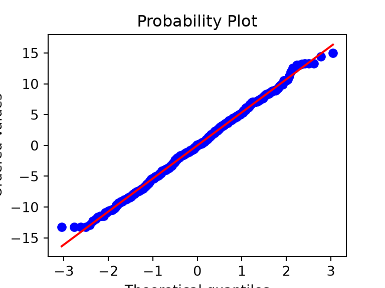
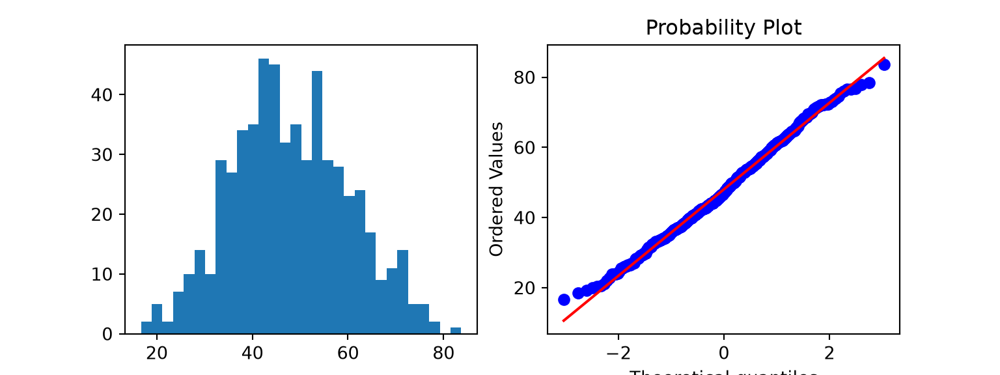

Prüfen Sie, ob Daten normalverteilt aussehen, entscheiden Sie, in welcher Spalte der Entscheidungstabelle Sie sich befinden, und verstehen Sie p-Werte, Effektstärken und Konfidenzintervalle.
Die Entscheidungstabelle stellt zwei Fragen: Was ist Ihr Ziel (die Zeile), und welchen Datentyp haben Sie (die Spalte)? Diese Seite behandelt die zweite Frage, vor allem ihren schwierigsten Teil: Ist ein Messwert «normalverteilt» genug für die linke Spalte?
Warum die Form Ihrer Daten wichtig ist
Die Tests der ersten Spalte (t-Tests, ANOVA, Pearson-Korrelation) vergleichen Mittelwerte und setzen voraus, dass die Daten innerhalb jeder Gruppe ungefähr einer glockenförmigen Normalverteilung folgen. Die Tests der zweiten Spalte (Mann-Whitney, Wilcoxon, Kruskal-Wallis, Spearman) arbeiten mit Rängen. Sie setzen keine Normalverteilung voraus.
Hinweis💡 Einfach erklärt
Ein Mittelwert fasst einen glockenförmigen Haufen von Zahlen gut zusammen. Bei einem schiefen Haufen ist er eine schlechte Zusammenfassung: Ein paar sehr lange Spitalaufenthalte ziehen den Mittelwert weit weg vom Typischen. Tests, die auf Mittelwerten beruhen, erben dieses Problem. Rangbasierte Tests fragen nur «welche Werte sind grösser?», darum können ein paar Extremwerte sie nicht dominieren.
Zuerst ansehen: Histogramme und QQ-Diagramme
Zeichnen Sie immer, bevor Sie testen. Hier sind drei Variablen aus den Übungsdaten: Alter, Aufenthaltsdauer und der PROM-Score (patientenberichtetes Messinstrument) nach 1 Jahr.
Punkte auf der Geraden: nahezu normalverteilt (Alter).
Punkte, die am rechten Ende nach oben abbiegen: Rechtsschiefe (Aufenthaltsdauer). Die flachen Stufen sind die vielen gleichen Werte (Bindungen, Ties) bei 0, 1 und 2 Tagen.
Punkte, die oben abflachen: eine Obergrenze (der PROM-Score). Viele Patientinnen und Patienten haben den Höchstwert.
Eine Zahl für die Schieflage einer Verteilung ist die Schiefe (skewness): 0 bei einer symmetrischen Form, positiv bei einem Ausläufer nach rechts, negativ bei einem Ausläufer nach links.
age -0.053511
los 1.608903
prom_1yr -0.727089
dtype: float64
Tipp🔀 R oder Python: Funktionen für die Schiefe
Packages definieren die Schiefe auf leicht unterschiedliche Weise (scipy.stats.skew() und das R-Paket e1071 verwenden je eine eigene Formel), deshalb kann sich die dritte Dezimalstelle unterscheiden. Wir haben die Formel in beiden Sprachen von Hand ausgeschrieben, damit die Zahlen genau übereinstimmen.
Formale Tests: Shapiro-Wilk, und warum man ihm nicht allein trauen sollte
Der Shapiro-Wilk-Test fragt: «Könnten diese Zahlen plausibel aus einer Normalverteilung stammen?» Ein kleiner p-Wert bedeutet «wahrscheinlich nicht». Es ist verlockend, ihn entscheiden zu lassen: p < 0.05 → Rangtest, sonst → t-Test. Diese Regel versagt in beiden Richtungen.
Bei grossen Stichproben ist er zu empfindlich. Unsere 600 Altersangaben sehen aus wie eine Glockenkurve aus dem Lehrbuch, und doch:
p = 0.001: «nicht normalverteilt». Bei 600 Werten kann der Test Abweichungen erkennen, die viel zu klein sind, um eine Rolle zu spielen. Ein t-Test mit diesen Altersangaben wäre völlig in Ordnung.
Bei kleinen Stichproben ist er zu schwach. Nehmen Sie nur die PROM-Scores der ersten 10 Patientinnen und Patienten nach 1 Jahr, von einer Variable, von der wir wissen, dass sie schief ist und eine Obergrenze hat:
p = 0.173: «kein Hinweis gegen eine Normalverteilung». Zehn Werte können die Form schlicht nicht zeigen, und gerade dann ist die Form am wichtigsten.
Warnung⚠️ Achtung: Lassen Sie nicht einen einzelnen p-Wert Ihren Test wählen
Entscheiden Sie anhand der Diagramme, anhand dessen, was Sie über die Messung wissen (ein begrenzter Score, eine Anzahl Tage), und anhand der Stichprobengrösse. Verwenden Sie Shapiro-Wilk als unterstützenden Hinweis, nicht als Richter. Sagen Sie dann im Methodenteil, wie Sie entschieden haben.
Innerhalb der Gruppen prüfen, nicht an den zusammengelegten Daten
Die Voraussetzung der Normalverteilung betrifft die Daten innerhalb jeder Gruppe (bei Regressionsmodellen die Residuen: was nach der Vorhersage des Modells übrig bleibt). Wenn man Gruppen mit unterschiedlichen Mittelwerten zusammenlegt, können vollkommen normalverteilte Daten nicht normalverteilt aussehen.
Hier ein extremes, erfundenes Beispiel: zwei Gruppen mit je 200 Werten, jede exakt normalverteilt, 4 Standardabweichungen auseinander.
group_a <-qnorm(ppoints(200), mean =40, sd =5) # 200 exakt normalverteilte Wertegroup_b <-qnorm(ppoints(200), mean =60, sd =5)shapiro.test(group_a)$p.value # eine Gruppe allein
[1] 1
shapiro.test(c(group_a, group_b))$p.value # beide Gruppen zusammengelegt
[1] 9.267769e-11
points = (np.arange(1, 201) -0.5) /200# dieselben Wahrscheinlichkeiten wie ppoints(200) in Rgroup_a = stats.norm.ppf(points, loc=40, scale=5) # 200 exakt normalverteilte Wertegroup_b = stats.norm.ppf(points, loc=60, scale=5)print(stats.shapiro(group_a).pvalue) # eine Gruppe allein
0.999999999999995
print(stats.shapiro(np.concatenate([group_a, group_b])).pvalue) # beide Gruppen zusammengelegt
9.26776946181564e-11
Jede Gruppe für sich besteht den Test mühelos (p ≈ 1). Zusammengelegt ist p < 0.001: Das Histogramm der zusammengelegten Werte hat zwei Höcker, und so sieht eine Normalverteilung nicht aus.
In echten Daten liegen die Gruppen meist viel näher beieinander. Der BMI unterscheidet sich zwischen der Hüft-TP- und der Knie-TP-Gruppe (im Code THA und TKA) nur um etwa ein Drittel einer Standardabweichung, das Zusammenlegen spielt also kaum eine Rolle. Stattdessen springt das Urteil von Shapiro-Wilk um 0.05 herum, je nachdem, wie Sie dieselben Daten aufteilen:
for procedure, group in cohort.groupby("procedure"): # jede Gruppe für sichprint(procedure, stats.shapiro(group["bmi"]).pvalue)
THA 0.05134144815391971
TKA 0.12354544393057915
# Residuum = BMI minus Mittelwert der Grupperesiduals = cohort["bmi"] - cohort.groupby("procedure")["bmi"].transform("mean")print(stats.shapiro(residuals).pvalue)
0.30629201181168864
fig, ax = plt.subplots(figsize=(4, 3))qq = stats.probplot(residuals, plot=ax) # der Name hält die Zahlen aus der Ausgabe herausplt.show()

Zusammengelegt p = 0.044, Hüft-TP allein 0.051, Knie-TP allein 0.124, Residuen 0.306: vier Ausschnitte derselben Daten, auf beiden Seiten von 0.05, obwohl das QQ-Diagramm eine nahezu perfekte Gerade ist. Das ist wieder die Lehre des vorherigen Abschnitts: Entscheiden Sie anhand der Diagramme und dessen, was Sie über die Messung wissen, nicht anhand eines einzelnen p-Werts.
Wie wichtig ist die Normalverteilung?
Weniger, als Sie vielleicht denken, sobald die Gruppen einigermassen gross sind. Tests auf Mittelwerten stützen sich darauf, dass der Mittelwert ungefähr normalverteilt ist, nicht jeder einzelne Wert. Dank des zentralen Grenzwertsatzes sind Mittelwerte aus etwa 30 oder mehr Werten nahezu normalverteilt, auch wenn die Werte selbst schief sind.
Eine praktische Faustregel:
Etwa 30 oder mehr pro Gruppe, mässige Schiefe, keine groben Ausreisser: t-Tests und ANOVA sind in Ordnung. Bei sehr schiefen Daten ist der Rangtest oft trotzdem die bessere Zusammenfassung.
Starke Schiefe oder extreme Ausreisser: Verwenden Sie die Rangspalte.
Kleine Gruppen (unter etwa 15 pro Gruppe): Diagramme können die Form nicht zeigen, und kein Test hat viel Teststärke. Wählen Sie nach dem, was Sie über die Messung wissen: die Rangspalte für schiefe oder ordinale Messgrössen, die Spalte für normalverteilte Daten für Messgrössen, von denen man weiss, dass sie ungefähr normalverteilt sind. Rechnen Sie in beiden Fällen mit breiten Konfidenzintervallen.
Ordinale Skalen oder eine Ober- oder Untergrenze: Verwenden Sie die Rangspalte, unabhängig von der Stichprobengrösse (siehe unten).
Hinweis🔍 Unter der Haube: der zentrale Grenzwertsatz
Wenn Sie viele Zufallsstichproben der Grösse n aus fast jeder Verteilung ziehen und von jeder Stichprobe den Mittelwert berechnen, bilden diese Mittelwerte eine Verteilung, die der Normalverteilung mit wachsendem n immer näher kommt. Ihre Streuung schrumpft proportional zu 1/√n. t-Tests beruhen auf der Verteilung des Mittelwerts; deshalb vertragen sie nicht normalverteilte Rohdaten, wenn n gross ist. «Etwa 30» ist eine Faustregel, kein Gesetz: Je schiefer die Daten, desto grösser muss n sein.
Schiefe, Obergrenzen und Transformationen
Eine gängige Massnahme gegen Rechtsschiefe ist, den Logarithmus der Werte zu analysieren. Bei der Aufenthaltsdauer müssen wir log(Tage + 1) verwenden, weil log(0) nicht existiert.
Der Logarithmus hilft (die Schiefe sinkt von etwa 1.6 auf 0.6), aber fast die Hälfte der Aufenthalte dauert 0 Tage, und keine Transformation kann einen Haufen identischer Werte auseinanderziehen. Resultate auf einer Log-Skala sind ausserdem schwerer zu erklären («ein Unterschied von 0.3 in log(Tage + 1)»). Hier sind rangbasierte Tests einfacher und ehrlicher.
Dasselbe gilt für den Deckeneffekt: 17 % der Patientinnen und Patienten erreichen nach 1 Jahr den Höchstwert, und keine Transformation kann diese Personen voneinander unterscheiden. Vergleichen Sie die Gruppen mit rangbasierten Tests, oder geben Sie den Anteil, der die Obergrenze (oder eine klinisch relevante Verbesserung) erreicht, als Ja/Nein-Zielgrösse an.
Ordinale Daten gehören immer in die Rangspalte
Ordinale Daten haben eine Reihenfolge, aber keine festen Abstände: Zufriedenheit von 1 («sehr unzufrieden») bis 5 («sehr zufrieden»), ASA-Klasse, Schmerz «keiner / leicht / mässig / stark». Der Schritt von 4 auf 5 ist nicht unbedingt gleich gross wie der von 1 auf 2, deshalb lassen sich Mittelwerte schwer interpretieren.
Geben Sie ordinale Daten als Anzahlen und Prozentsätze oder als Median (IQR, Interquartilsabstand) an und vergleichen Sie Gruppen mit rangbasierten Tests. Berechnen Sie nie einen t-Test mit Likert-Scores, egal wie viele Patientinnen und Patienten Sie haben.
Gepaart oder ungepaart? Gematcht oder nicht gematcht?
Die Zeilen der Entscheidungstabelle fragen auch, ob Ihre Gruppen unabhängig oder gepaart/gematcht sind.
Ungepaart (unabhängig): In jeder Gruppe sind andere Patientinnen und Patienten. Hüft-TP gegenüber Knie-TP; Standort A gegenüber Standort B; Männer gegenüber Frauen.
Gepaart: dieselben Patientinnen und Patienten, zweimal gemessen, oder natürliche Paare. PROM vor der Operation gegenüber PROM nach 1 Jahr bei denselben Personen; linkes gegenüber rechtem Knie bei beidseitig operierten Personen; zwei Beurteilende, die dieselben Röntgenbilder messen.
Gematcht: Jeder Person in der einen Gruppe wurde eine ähnliche Person in der anderen Gruppe zugeordnet (nach Alter, Geschlecht, BMI …). Behandeln Sie gematchte Gruppen wie Paare.
Beidseitig operierte Patientinnen und Patienten brauchen Sorgfalt. In unserer Kohorte erscheinen 80 Personen zweimal, einmal für jede Seite, meist in derselben Gruppe. Ihre beiden Eingriffe teilen Alter, Geschlecht und Gesundheit derselben Person und sind daher nicht unabhängig. Tests, die jede Zeile wie eine eigene Patientin oder einen eigenen Patienten behandeln, sind dann etwas zu optimistisch (p-Werte zu klein, KI zu schmal). Analysieren Sie entweder einen Eingriff pro Person (zum Beispiel den ersten), oder verwenden Sie Methoden für geclusterte Daten, etwa gemischte Modelle. Sagen Sie, was Sie getan haben.
Die Paarung ist wichtig, weil Messungen an derselben Person zusammenhängen. Eine gepaarte Analyse vergleicht jede Person mit sich selbst. Das beseitigt die Unterschiede zwischen den Personen und liefert meist ein genaueres Resultat. Gepaarte Daten wie ungepaarte zu analysieren gehört zu den häufigsten Fehlern in der Literatur.
Von der Frage zum Test
flowchart TD
A[Was ist Ihr Ziel?] --> B[Eine Gruppe beschreiben]
A --> M[Eine Gruppe mit einem hypothetischen Wert vergleichen]
A --> C[Gruppen oder Messungen vergleichen]
A --> D[Zusammenhang oder Vorhersage]
C --> E{Dieselben Personen oder gematcht?}
E -->|Nein| F[Ungepaarte Zeilen]
E -->|Ja| G[Gepaarte / gematchte Zeilen]
B --> H{Welche Art von Zielgrösse?}
M --> H
F --> H
G --> H
D --> H
H -->|Messwert, innerhalb der Gruppen ungefähr normalverteilt| I[Spalte für normalverteilte Daten]
H -->|Stark schief, begrenzt oder ordinal| J[Rangspalte]
H -->|Ja / Nein| K[Binomialspalte]
H -->|Zeit bis zu einem Ereignis| L[Überlebenszeitspalte]
Suchen Sie dann Ihre Zeile und Ihre Spalte in der Entscheidungstabelle. Einige durchgerechnete Beispiele aus typischen orthopädischen Forschungsfragen:
Frage
Zeile
Spalte
Test
Unterscheidet sich der EFAS-Score (Score der Europäischen Gesellschaft für Fuss- und Sprunggelenkchirurgie) nach 3 Monaten zwischen Walker und Gips?
Jeder Test auf dieser Website liefert drei Angaben. Sie beantworten verschiedene Fragen, und ein guter Resultatteil nennt alle drei.
Die Effektstärke beantwortet wie gross? Zum Beispiel der Unterschied zwischen zwei Mittelwerten.
Das 95%-Konfidenzintervall (KI) beantwortet wie sicher sind wir uns über diese Grösse? Es ist der Bereich von Effektstärken, die mit den Daten vereinbar sind.
Der p-Wert beantwortet wie überraschend wären solche Daten, wenn es wirklich gar keinen Unterschied gäbe? Er misst weder die Grösse noch die Bedeutung eines Effekts.
Hier alle drei für den BMI bei Knie-TP gegenüber Hüft-TP, mit dem t-Test für unabhängige Stichproben (nach Welch) von Seite 6:
bmi_test <-t.test(bmi ~ procedure, data = cohort) # t-Test nach Welch (Standard in R)bmi_test
Welch Two Sample t-test
data: bmi by procedure
t = -4.0705, df = 580.09, p-value = 5.341e-05
alternative hypothesis: true difference in means between group THA and group TKA is not equal to 0
95 percent confidence interval:
-2.647347 -0.924101
sample estimates:
mean in group THA mean in group TKA
29.46185 31.24758
difference <-unname(bmi_test$estimate[2] - bmi_test$estimate[1]) # Knie-TP minus Hüft-TPci <--rev(bmi_test$conf.int) # umdrehen zu Knie-TP minus Hüft-TPtibble(difference = difference, ci_low = ci[1], ci_high = ci[2], p = bmi_test$p.value)
# A tibble: 1 × 4
difference ci_low ci_high p
<dbl> <dbl> <dbl> <dbl>
1 1.79 0.924 2.65 0.0000534
difference 1.785724
ci_low 0.924101
ci_high 2.647347
p 0.000053
dtype: float64
TKA patients had a higher BMI than THA patients (mean difference 1.8 kg/m², 95% CI 0.9 to 2.6; p < 0.001).
Ist ein Unterschied von 1.8 kg/m² klinisch bedeutsam? Der p-Wert kann das nicht sagen. Fragen Sie, ob ein Unterschied irgendwo im KI (0.9 bis 2.6 kg/m²) das Risiko oder das Vorgehen ändern würde, zum Beispiel die Komplikationsraten. Das ist klinische Beurteilung, nicht Statistik. Statistisch signifikant heisst nur, dass solche Daten ungewöhnlich wären, wenn es wirklich keinen Unterschied gäbe. Es heisst nicht, dass der Unterschied gross oder wichtig ist.
Warnung⚠️ Achtung: zwei klassische Fehlinterpretationen
«p = 0.20, also gibt es keinen Unterschied.» Nein. Es heisst, dass die Daten null nicht ausschliessen konnten. Schauen Sie auf das KI: Wenn es von «schädlich» bis «sehr hilfreich» reicht, war die Studie zu klein für eine Aussage.
«p < 0.001, also ist der Effekt gross.» Nein. Mit genügend Patientinnen und Patienten erhalten winzige Unterschiede winzige p-Werte. Schauen Sie auf die Effektstärke und das KI.
Tipp🔀 R oder Python: welche Gruppe zuerst kommt
t.test(bmi ~ procedure) in R zieht in alphabetischer Reihenfolge der Gruppen ab (Hüft-TP minus Knie-TP). In scipy zieht ttest_ind(tka, tha) das zweite Argument vom ersten ab. Dieselbe Antwort, entgegengesetztes Vorzeichen. Geben Sie immer an, welche Gruppe von welcher abgezogen wurde, wie wir es oben getan haben.
Beurteilen Sie bei PROMs Unterschiede an der minimalen klinisch relevanten Differenz (MCID): der kleinsten Veränderung, die Patientinnen und Patienten als bedeutsam wahrnehmen. Publizierte MCID variieren mit der Studie und der Methode, mit der sie hergeleitet wurden; zitieren Sie daher die, die Sie verwenden. Gehen Sie vorsichtig damit um: Eine MCID ist eine Schwelle innerhalb einer Person für deren eigene Veränderung. Ein Unterschied zwischen den Mittelwerten zweier Gruppen, der kleiner ist als die MCID, beweist nicht, dass keine Person profitiert hat, und ein grösserer bedeutet nicht, dass alle profitiert haben. Oft ist es klarer, den Anteil der Personen in jeder Gruppe zu vergleichen, der die MCID erreicht hat.
Übungen
1. Zeichnen Sie ein Histogramm und ein QQ-Diagramm des PROM-Scores vor der Operation. Ist er näher an einer Normalverteilung als der Score nach 1 Jahr? Woran könnte das liegen?
preop = proms[(proms["visit"] =="preop") & proms["prom_score"].notna()]fig, axes = plt.subplots(1, 2, figsize=(8, 3))axes[0].hist(preop["prom_score"], bins=30)qq = stats.probplot(preop["prom_score"], plot=axes[1]) # der Name hält die Zahlen aus der Ausgabe herausplt.show()

print(skewness(preop["prom_score"]))
0.14319820568938835
Viel näher an der Normalverteilung: Schiefe etwa 0.1, und die QQ-Punkte folgen der Geraden. Vor der Operation liegen die Scores in der Mitte der Skala, weit von der Obergrenze entfernt. Nach einer erfolgreichen Operation erreichen viele Patientinnen und Patienten den Höchstwert, und das erzeugt den Deckeneffekt.
2. Bei einer Studie soll die Operationsdauer zwischen zwei Chirurginnen oder Chirurgen (S1, S2) verglichen werden, mit je etwa 40 Fällen. Das Histogramm ist ziemlich symmetrisch, mit einigen langen Fällen. Welche Spalte der Entscheidungstabelle würden Sie verwenden, und wie würden Sie das im Methodenteil begründen?
TippLösung
Die Spalte für normalverteilte Daten (ein t-Test für unabhängige Stichproben, in der Version nach Welch) ist vertretbar. Bei etwa 40 Fällen pro Gruppe und einer ungefähr symmetrischen Form ist der t-Test robust. Prüfen Sie das QQ-Diagramm innerhalb jeder Chirurgin und jedes Chirurgen, und prüfen Sie, ob die wenigen langen Fälle keine extremen Ausreisser sind. Methods: “Operative time was approximately normally distributed within each group on visual inspection of histograms and QQ plots, and was compared with Welch’s t test.” Wären die langen Fälle extrem, wäre ein Mann-Whitney-Test die sicherere Wahl; sagen Sie das dazu.
3. Eine Studie berichtet: “1-year KOOS JR was 2.1 points higher with the new implant (95% CI −1.5 to 5.7; p = 0.25).” Nehmen Sie an, die MCID für den KOOS JR betrage 14 Punkte. Schreiben Sie einen Satz, der dieses Resultat interpretiert.
TippLösung
«Die Studie fand keinen klaren Unterschied beim KOOS JR nach 1 Jahr zwischen den Implantaten: Der Schätzwert (2.1 Punkte) und das gesamte 95%-KI (−1.5 bis 5.7) liegen weit unter der MCID von 14 Punkten, daher ist ein grosser durchschnittlicher Nutzen des neuen Implantats unwahrscheinlich.»
Das ist aussagekräftiger als «nicht signifikant»: Das KI schliesst einen grossen durchschnittlichen Unterschied aus. Streng genommen ist die MCID eine Schwelle innerhalb einer Person, deshalb vergleicht die klarste Anschlussanalyse den Anteil der Personen in jeder Gruppe, die sich um mindestens 14 Punkte verbessert haben.